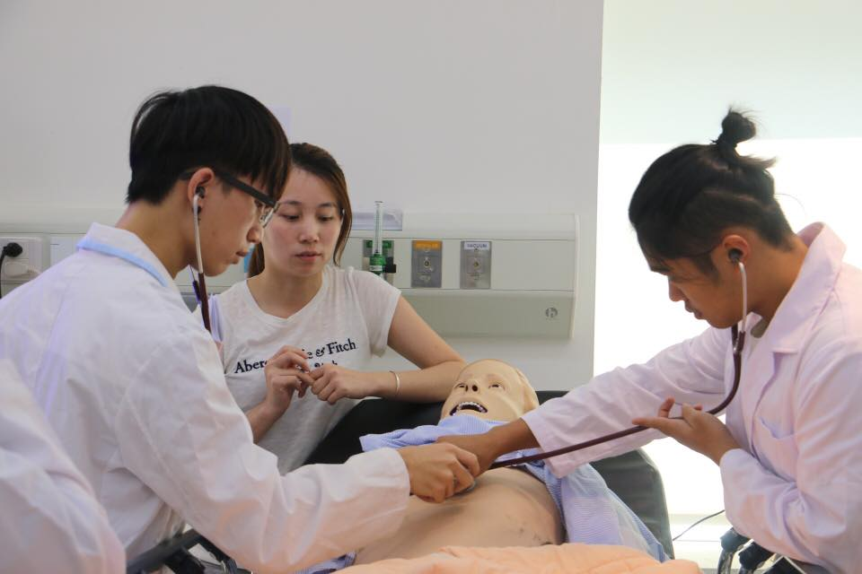
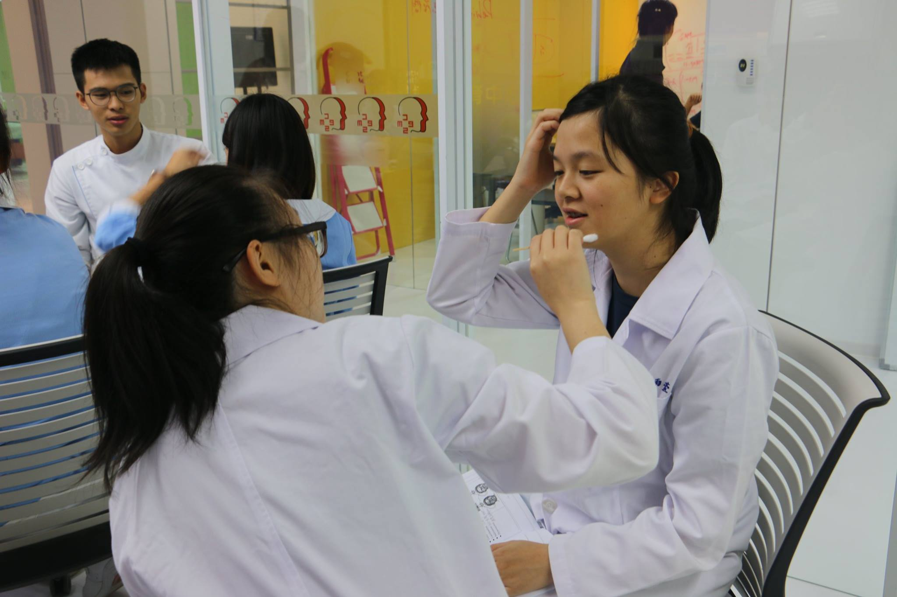
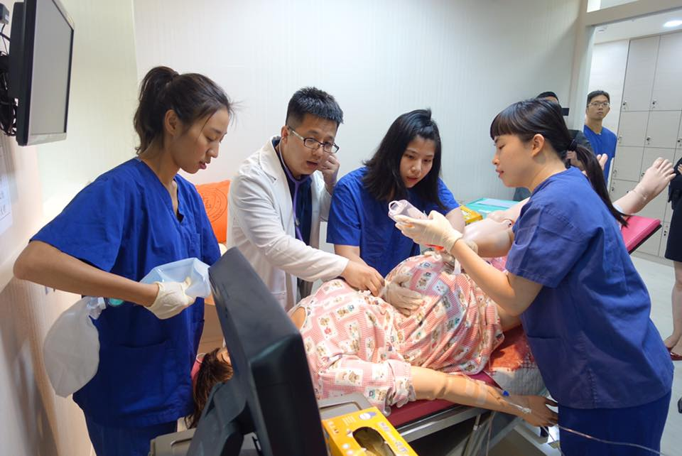

各系模擬課程
首頁 > 課程資訊 > 各系模擬課程
i
臨床護理專業技能選習| 授課講師 | 胡慧蘭老師 |
|---|---|
| 報名截止日 |
此課程藉由數位模擬人和實境模擬教育課程，協助即將從事臨床工作的學生將所學和臨床實務之間架起了一座橋樑以達到「護理醫學教育」及「護理臨床實務」的無縫接軌。
課程介紹

課程設計以加強和促進病人的安全和高質量的醫療照護為宗旨。此外，學生能應用護理過程促進臨床決策、批判性思考、護病關係、危機處理、能與他人合作、兼顧倫理及法律範疇達到做中學、學中做的成果。

藉由模擬實境課程，期許學生修習完本課程，能具備以下能力
1.能遵從法律倫理規範並謹守護理專業標準
2.能應用有效的溝通技巧並了解在不同文化的脈絡中之溝通模式
3.能提供具多元文化思維的照護並能評估個案及家屬的健康問題
4.能提供臨床決策以確保安全及正確的執行護理照護
5.能提供安全的護理措施並考量個案的文化背景
6.能應用教育和學習的過程以增進個案的健康並考量個案的文化背景及發展階段
7.能與他人合作並能反映個案或家屬或群體的健康疾病的連續過程
8.能促進跨團隊對病人最大的利益
9.能增進學生臨床專業技能
